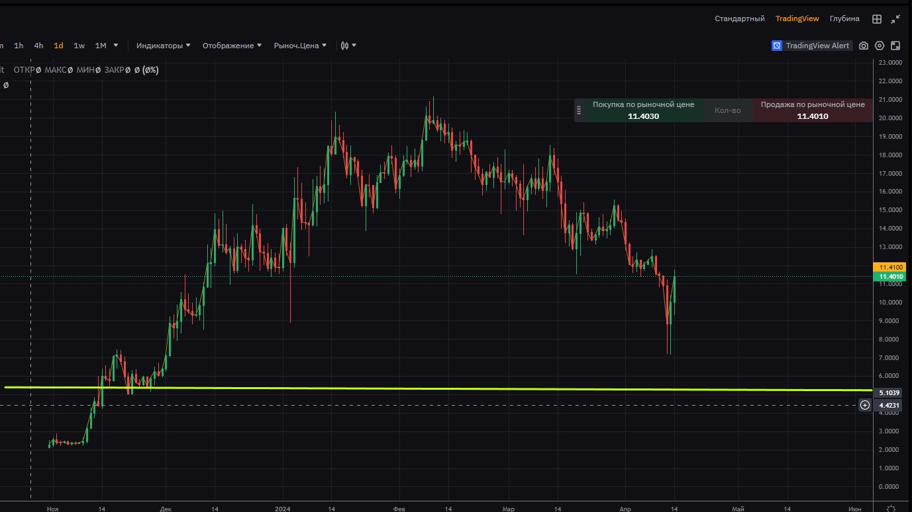
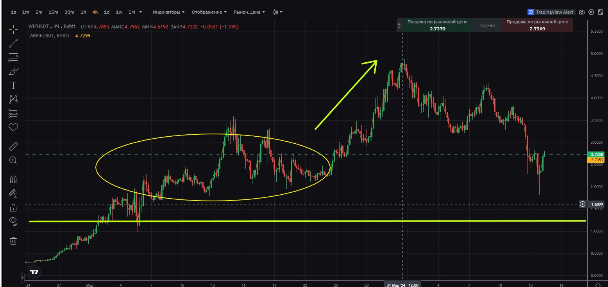
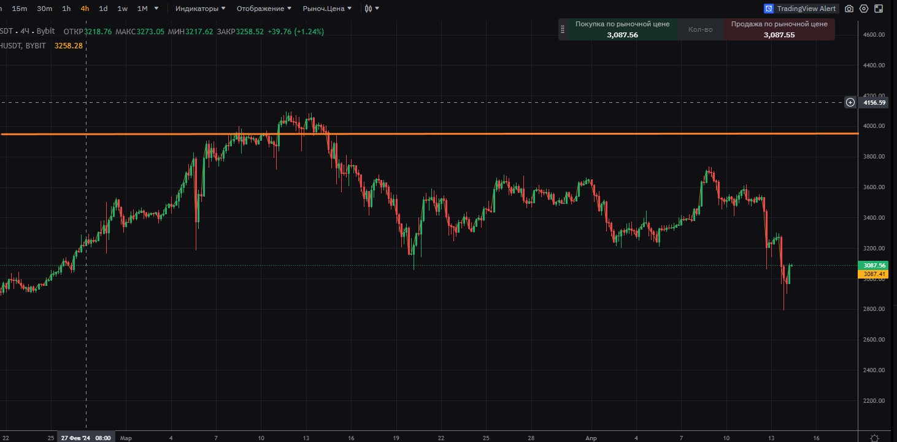
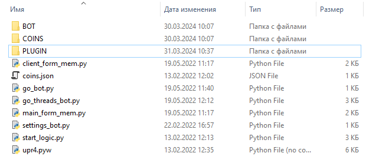
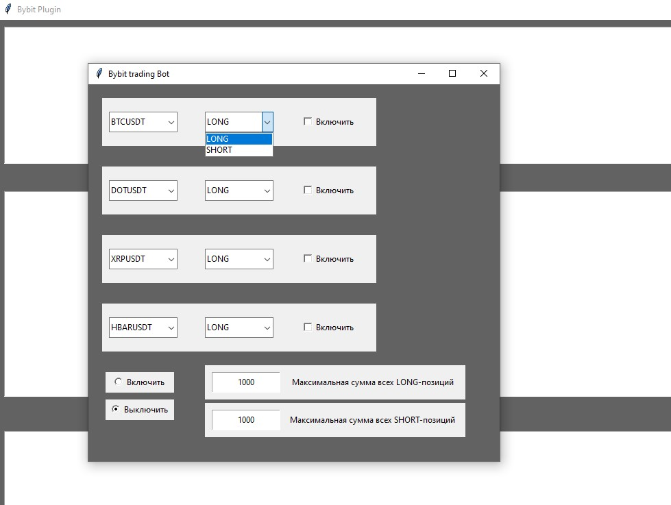
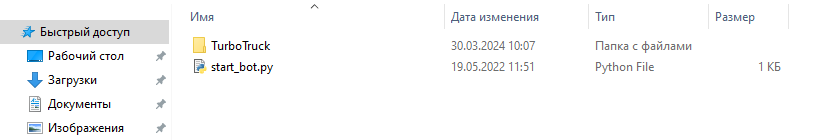

Торговый бот написан на языке python. Имеет полный исходный код.
На текущий момент предназначен для биржи Bybit. Работает на фьючерсах.
Сама программа состоит из нескольких модулей.
Один отвечает за работу с интернетом для подключения и общения с биржей.
Второй модуль представляет из себя логический движок.
Третий отвечает за интерфейс по взаимодействию с ботом.
Программа имеет несколько папок, в каждой имеется несколько сгруппированных скриптов.
Его алгоритм работы. Алгоритм сам основан на мартингейле. Но в текущей реализации его использование почти на 100%
безопасное! Почему почти, потому что сюда примешиваются такие факторы как проблемы с оборудованием, интернетом и самой работы биржи.
Сам я стараюсь от версии к версии чтобы бот был максимально отказоустойчивым и неприхотливым к качеству интернета.
И сразу же могут поползти мысли: усреднения и 100% безопасно?!
Но думаю кое-кто уже догадался о какой стратегии здесь идёт речь.
В прошлых реализациях бот действительно мог торговать в обе стороны по желанию как было прописано в настройках.
В текущей версии это исключено. Можно выбрать только одну сторону.
И бот заработает допустим в шорт только когда соблюдены два фактора.
Уже есть лонговая позиция, поставлен стоп. Допустим стоп в безубыток. Это вначале нужно сделать вручную.
Или вы пирамидите по ходу движения, или сразу в позицию вошли со стопом. Неважно.
Второе условие важно чтобы цена ушла от вашего стопа лонговой позиции на относительно безопасное расстояние
по вашему мнению. Но главное чтобы тейк от шортов не заходил за границу стопа. Чтобы не допустить случайно такую ситуацию, когда
бот оставил шорт, не смог взять тейк, но и нет страхующей лонговой позиции, которая была выброшена по рыночному стопу.
Бот откажется ставить ордер в том месте, где его будущий тейк заходит за границы стопа противоположной позиции.
Бот в текущей реализации не двигает стоп.
Посмотрим на такие графики.


Если взять допустим нижний график монеты WIF. Вы взяли лонговую позицию. Поставили стоп в безубыток.
Но вы не знаете где будете закрываться. Вы включате бота чтобы он пока зарабатывал на падениях.
Желтым овальным кружочком обозначен диапозон, где бот мог бы несколько раз взять тейки от своих шортов.
В тоже время когда цена уже пошла наверх, бот шорт будет усреднять постепенно и вы не потеряете много прибыли от своей
лонговой позиции, как это например происходит когда вы не угадали с "замком".
А что произойдет если цена пойдет дальше наверх? Получится просто замок.
Размер лонговой позиции станет равен размеру шортовой позиции.
Бот всё равно будет ждать, но вы можете отключить бота и закрыть все позиции. Останетесь всё равно в плюсе.
Аналогично и для лонгового алгоритма. В случае если стоп страхующей лонговой или шортовой позиции будет сработан, то
бот откажется работать и будет писать в консоль подобие theEnd_finish

Здесь график Эфириума. Допустим вам удалось зашортить на 4000 долларах. Но вы не знаете пока как поведет рынок.
Цена упала и вы включаете бота торговать в лонг.
В будущей версии бота можно будет указать параметр сколько процентов от прибыли тратить на улучшение стопа, чтобы не достали.
Допустим на эфире стоит стоп для шортовой позиции и бот часть от прибыли от лонговых сделок направляет
на улучшение или отдаление стопа для шортовой позиции.
Бот имеет много параметров. Из вышесказанного о боте, вы наверное уже поняли что важно чтобы ни в коем случае
бот не сделал так чтобы одна позиция допустим шорт не перевесила размер лонговой позиции, которую вы набрали вручную.
Где указать параметр будет сказано ниже.

Папка с названием BOT имеет 4 папки, в каждой из которых хранится логический движок.
Таких логических движков четыре для того чтобы была возможность включения торговли одновременно
сразу на четырех парах.
Для настройки бота пользователем стоит обратить свое внимание на папку с названием COINS
и файл рядом с названием coins.json. Обратите внимание если вы не добавите название пары в файл coins.json
то бот не увидит какие вы задали настройки для этой монеты, которые хранятся в папке COINS.
Сам файл coins.json может иметь такой вид
["BTCUSDT", "DOTUSDT", "XRPUSDT", "HBARUSDT"]
также может выглядеть так
["BTCUSDT", "DOTUSDT", "ETHUSDT", "DOGEUSDT", "SUSHIUSDT"]
Всё пишется с загланой буквы.
обратите внимание вам надо неплохо разбираться в формате json

Вы можете убирать и добавлять по желанию. В интерфейсе вы можете увидеть выпадающий список на выбор.
Справа от которого можно выбрать какое направление вы предпочитаете, работу в лонг или в шорт.
Допустим вы можете выбрать работу бота на монете биткоина в лонг. А на щиткоине работу в шорт.
Соответственно вы понимаете что добавив какую-либо пару, вам необходимо сделать настройки для этой пары,
которые также хранятся в формате json. Но вам нужно будет залезть в папку COINS
И вы можете видеть 4 папки, например
BTCUSDT
DOTUSDT
HBARUSDT
XRPUSDT
Очень важно писать всё с большой буквой и не добавлять ничего лишнего.
Иначе бот не найдет настройки и это вызовет ошибку
Если например захотели добавить монету Matic то вам надо везде писать как MATICUSDT с добавлением окончания USDT.
Создав папку MATICUSDT вам лучше скопировать туда два файла с папки BTCUSDT
как пример и заменить значения, подходящие для этой монеты.
Зайдя в папку BTCUSDT вы можете видеть два файла с названиями long_config.json и short_config.json.
Об этих двух файлах я и говорил.
Вы наверное вспомнили что интерфейс имеет галочки включения и выключения прямо напротив от монеты
как для работы в лонг, так и в шорт. Название этих файлов не стоит менять. Аналогичные названия должны содержать
другие папки например XRPUSDT ETHUSDT. Иначе бот не найдет настройки. Самое главное содержимое внутри json
и оно может выглядеть примерно так.
long_config.json
{
"symbol": "BTCUSDT",
"mantissa": 0,
"takeprofit": 100,
"plus": 90,
"diffprice": 50,
"average": 6,
"orders": [0.001, 0.001, 0.002, 0.004, 0.008, 0.016],
"ranges": [100, 200, 400, 500, 700, 700],
"maxprice": 75000,
"stopplus": 90,
"defdistance": 700,
"deftime": 240
}
SYMBOL
-------------------------------------------------------------------------------
справа от symbol вы можете увидеть BTCUSDT.
symbol в этих двух файлах настроек должны иметь тоже имя что и имя папки, в которой они лежат.
MANTISSA
-------------------------------------------------------------------------------
В данном случае стоит 0.
Так как биткоин имеет высокую цену, значения после запятой лучше игнорировать.
Но есть такие монеты, которые имеют в стакане вид цены например 0.045 в вэб браузере.
В этом случае вам очень важно указать значение 3, то есть после запятой три цифры играют значение.
Но очень важно запомнить: на одну цифру меньше прописать цифру можно, но больше нельзя.
Допустим цена 0.0634, вы можете захотеть прописать 3, а не 4, но 5 вызовет ошибку.
Или допустим цена 23.46
Вы можете прописать 0, вы не желаете обращать внимание на центы,
тогда вам надо с учетом этого заносить данные внизу
Соответственно указанному вами значение мантиссы вам надо заполнять все данные дальше.
TAKEPROFIT
-------------------------------------------------------------------------------
В данном виде вы видите значение 100. Это означает что когда бот уже вошёл в позицию,
он от позиции отсчитает 100 пунктов
и поставит ордер на закрытие позиции на 100 долларов выше. Если бот усредниться вторым ордером, бот произведет
перерасчет и поменяет ордер на закрытие таким образом, чтобы от позиции тейк стоял на 100 пунктов выше.
Если мантисса равна 3, то тейкпрофит должен иметь такое число - 0.024 например
PLUS
-------------------------------------------------------------------------------
Вы можете видеть справа значение 90.
Когда бот ещё только начал работать, нету ни позиции, ни ордеров, бот не знает где ставить ордер.
Когда вы указываете значение 90, это означает что бот берет значение текущей цены на рынке
и отнимает от нее 90 пунктов и уже ставит первый ордер на открытие позиции.
Значение PLUS работает только для первого ордера,
для всех усредняющих ордеров работает другой метод. Подробнее описано ниже.
Но коротко говоря создается сетка на основе первого выполнившегося ордера.
А сама настройка сетки будет описано ниже
DIFFPRICE
-------------------------------------------------------------------------------
Разница цены. Вы можете видеть значение справа 50.
Бывает возникает такая ситуация. Бот взял цену с рынка и поставил ордер, но вы видите что цена растет и растет,
а ордер всё дальше и дальше остается внизу, а войти в позицию вам важно, но не удается.
Поэтому и существует DIFFPRICE. Когда цена растет идет складывание значений PLUS и DIFFPRICE и
если изменившиеся цена превышает данное значение,
то переставляется ордер повыше с учетом указанного вами значения 90 для PLUS
Это проще выглядит так.
Цена 41300
ордер встает на 41200.
Цена улетает на 41430
Но значение 41430 - 41200 = 230 пунктов, что больше суммы PLUS + DIFFPRICE = 90 + 50 = 140
И тогда переставляется ордер на 41430 - PLUS = 41430 - 90 = 41340
И сделано это вот почему. Когда цена слишком дерганно ходит,
изменение ордера на открытие было бы слишком частым и также дерганным. Что потенциально может перегрузить бота или биржу.
DIFFPRICE как бы говорит сколько можно терпеть, если цена не идет вниз но пытается идти наверх.
Его значение не должно быть совсем маленьким. Когда ордер на открытие подтянулся наверх, значения снова пересчитываются
по той же логике.
AVERAGE
-------------------------------------------------------------------------------
Значение справа вы видите 6, это означает сколько всего ордеров может участвовать для одной позиции,
в данном случае лонговой позиции. То есть если первый ордер выполнился и уже открылась позиция,
то для улучшения средней цены с помощью усреднений у вас есть ещё только 5 ордеров.
Данное значение используется также для защиты. Вы точно знаете
на какую сумму будет набрана позиция. Но какие отступы делать для этих вот 5 ордеров и
на какую сумму для каждого ордера в этом помогают два списка ниже ORDERS и RANGES
(Задание значений для сетки)
ORDERS
-------------------------------------------------------------------------------
Вы видите такие значения справа
[0.001, 0.001, 0.002, 0.004, 0.008, 0.016]
Что можно развернуть как
0.001 - количество сатошей для самого первого ордера
0.001 - количество сатошей для второго ордера (Это второй ордер с точки зрения бота, но это также первый усредняющий ордер с точки зрения трейдера-человека, постарайтесь не путаться)
0.002 - количество сатошей для третьего ордера
0.004 - количество сатошей для четвертого ордера
0.008 - количество сатошей для пятого ордера
0.016 - количество сатошей для шестого ордера
Как видите это обычный мартингейл. Вы можете прописать другие значения, тогда это будет не совсем привычный мартин.
Обратите внимание если вы заполнили данные ORDERS хоть на 12 ордеров, но если значение AVERAGE стоит 6, то максимум будет работать 6 ордеров на одну позицию.
Ошибки это не вызовет. Наоборот, если вы укажите значение AVERAGE больше чем количество заполненных значений в ORDERS это вызовет ошибку.
Это также справедливо и для RANGES.
Как вы поняли если решили задействовать 6 ордеров, прописали сколько сатошей будет иметь каждый ордер, то важно иметь возможность указать
отступ для каждого ордера. В этом нам поможет список RANGES
Исходя из настроек, не трудно посчитать что максимум бот наберет позицию на 0.032 сатошей.
Соответственно изначально вам нужно иметь шортовую позицию на 0.032. Бот пока не делает подробные проверки. Только если есть противоположная позиция и её стоп.
Но если стопа нет, то бот уже ориентируется на среднюю цену противоположной позиции, что нежелательно. Но это ради гибкости, если вы у вас выработана какая-то своя стратегия.
RANGES
---------------------------------------------------------------------------------
Вы видите такие значения справа
[100, 200, 400, 500, 700, 700]
Механизм принятия решения для первого ордера вы могли понять из уже выше сказанного.
Как уже было написано выше как ставятся усредняющие ордера в зависимости от первого выполненного ордера.
И уже от него отсчитываются все отступы
Развернуть это можно таким образом
42400 - первый выполнившийся ордер
(-100) 42300 - значение для второго ордера
(-200) 42100 - значение для третьего ордера
(-400) 41700 - значение для четвертого ордера
(-500) 41200 - значение для пятого ордера
(-700) 40500 - значение для шестого ордера
Алгоритм выставления ордеров таков: когда уже выполнился первый ордер и появилась позиция, выставляется второй ордер, он же первый ордер на усреднение.
Также выставляется ордер на закрытие позиции. В этот момент можно наблюдать два открытых ордера. Эта сетка не выставляется сразу. По одному ордеру.
Если ордер на закрытие позиции выполнился ранее, то ордер на усреднение отменяется. И логика начинается заново.
MAXPRICE
---------------------------------------------------------------------------------
Как вы знаете обычно чем выше цена чем опаснее покупать.
Поэтому вы можете указать значение выше которого бот не должен открывать какие-либо ордера на открытие
Значение в 75000 означает что бот перейдет на паузу, пока не дождется значения цены ниже 75000
STOPPLUS
---------------------------------------------------------------------------------
Этот параметр используется ботом как дополнительное страхующее значение. Бот итак следит за тем чтобы не открыть
ордер таким образом, чтобы тейк не зашел дальше стопа противоположной позиции. Допустим вы хотите включить лонговый алгоритм. Вы
держите шорт биткоина на 65000. Биткоин упал на 62000. Вы перевели стоп в безубыток У вас защитный стоп на 64700.
Бот постарается не открыть ордер таким образом чтобы тейк от лонга был выше вашего стопа в 64700. Если допустим у вас значение STOPPLUS
в 100 пунктов, то это означает что бот никоим образом не откроет выше 64600. Если нет стопа то ориентирование идет на среднюю цену
противоположной позиции. И уже к нему отсчитывается значение STOPPLUS.
В тоже время рекомендуется заранее настраивать MAXPRICE.
Рынок очень быстро движется, а бот не реагирует очень быстро. Поэтому настраиваете такие значения полагаясь на свой опыт.
DEFDISTANCE и DEFTIME
---------------------------------------------------------------------------------
Как вы знаете на крипторынке существуют такие манипуляции как сквизы или непреднамеренные сквизы, когда какой-то крупняк необдумав нажал на кнопку.
Эти параметры призваны защитить бота от сквизов. Не открыть лонг наверху на импульсе,
также для алгоритма шорт от сквиза вниз, чтобы не открыть шорт внизу и не остаться там.
Для заполнения настроек шорта подробности будут ниже, но в основном всё также, просто вам нужно мыслить наоборот.
Эти значения работают совместно. Значение DEFDISTANCE в 700 означает что бот будет реагировать нормально если цена вырастит выше 700 пунктов,
но только если это произошло за период не менее 240 секунд. Это значение DEFTIME. Указывается только секунды, не минуты, не часы. Только секунды.
240 секунд это 4 минуты. Если сквиз произошел так быстро что цена улетела наверх выше 700 пунктов и при этом не прошло 4 минуты, то бот уйдет на паузу.
И открывать ордер на открытие уже не будет в интервале 4 минут. После 4 минут бот просыпается. Подбираете настройки индивидуально.
Для лонгового алгоритма эти значения работают только наверх, на повышение.
Для шорта наоборот вниз.
Теперь рассмотрим файл short_config.json
short_config.json
{
"symbol": "BTCUSDT",
"mantissa": 0,
"takeprofit": 100,
"plus": 90,
"diffprice": 50,
"average": 6,
"orders": [0.001, 0.001, 0.002, 0.004, 0.008, 0.016],
"ranges": [100, 200, 400, 500, 700, 700],
"minprice": 40000,
"stopplus": 90,
"defdistance": 700,
"deftime": 240
}
Как видите конфиг файл шортового алгоритма почти ничем не отличается от лонговой версии.
Вся суть настроек для лонговой версии такая же как и для шортовой версии.
Просто всё наоборот. Единственное отличие параметр minprice а не maxprice.
Для шорта опасно взять шорт внизу и остаться там, когда повышается перепроданность монеты.
В будущих версиях предполагается иметь minprice и maxprice для обоих направлениях. Что дает больше гибкости в определенных стратегиях.
Теперь находите папку PLUGIN и находите там файл config.json
Он принимает такой вид
{
"api": "bikvsgtj8NgpV3yxk6j",
"secret": "sktShnr4O2HCFyZrtthj6QgVwHs15kzoNmRpu",
"testnet": true
}
Если предполагается использовать бота для реального счета, а не для testnet.bybit.com
то вам необходимо задать значение false вместо true напротив параметра testnet.
И аккуратненько заменяете api и secret на свои в ковычки и сохраняете.
Интернет-плагин использует ключи для работы с вашим счетом.
Запустить бота следует нажав на файл start_bot.py

Вы можете увидеть консоль, куда пишет бот о своих операциях.
Интерфейс и также большое окно от интернет-плагина. Там записываются необратанные данные от биржи.
Также команды к плагину от логического движка.
В интерфейсе обозначаете максимальную сумму для всех лонг-позиций и если будет значение превысит бот уйдет в паузу. Также для шорт-позиций.
Это удобно для тех кто использует кросс и любит одновременно торговать на нескольких монетах.
Выбираете пары, чтобы появились те или иные монеты вам надо сделать настройки, как это сделать,
было описано выше. Ставите галочки. Хотите лонг, хотите в шорт.
Или всё сразу. Максимум бот может одновременно обслуживать 4 направлений. 4 монеты.
Можете только включить одну монету в лонг.
И прекрасно должно работать.
Если страхующая допустим лонговая позиция была выброшена по рыночному стопу, то бот откажется совершать шортовые сделки и начнет писать в консоль
theEnd_finish
Допустим вы хотели бы вручную исправить какую-то ситуацию, вы отключаете галочку и бот там становится на паузу.
Везде где стоят галочки бот будет продолжать без проблем. И исправляете ситуацию вручную.
Но только после вмешательства из вне эту галочку включать снова уже нельзя.
Кнопку сброса, обнуления, чтобы бот начал опять работать с чистого листа
будет добавлено в следующей версии. А пока если всего бота перезапустить целиком.
Когда вы всё настроили вы нажимаете на переключатель Включить слева внизу. И бот начнет работать.
Полное понимание алгоритма работы в умелых руках даст хорошую прибыль. Бот полагается на человека.
Бот не имеет в текущей реализации сигнальщика. Он похож на слепого быка.
Но ему нужно помогать и он спашет вам много земли и принесет прибыль.
Человеку тяжело или даже невозможно делать 40-80 микросделок круглосуточно каждый день на протяжении недель.
При дампе легче вручную выправлять ситуацию с микропозициями.
И средняя цена позиции лучше и сама поза небольшая, а прибыльность получше.
И хорош в использовании при определенных сценариях.
Надо хорошо уметь делать настройки, включать вовремя и выключать.